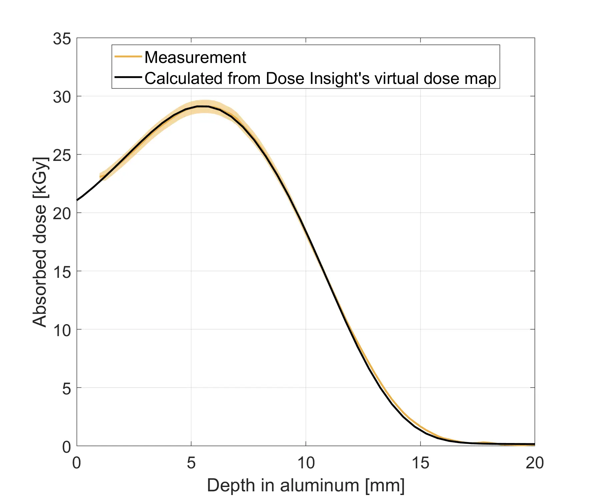
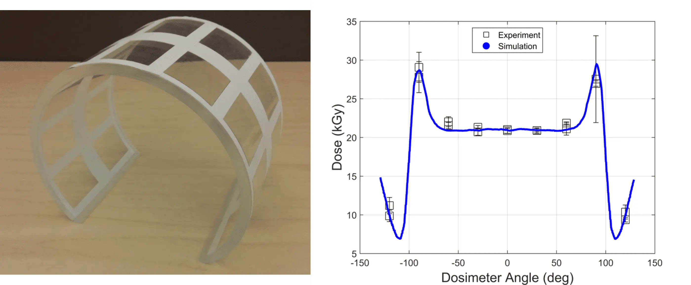

Resources
Science-backed virtual dose mapping
Frequently asked questions
What is dose mapping?
What is virtual dose mapping?
How long does virtual dose mapping take?
What is Design For Sterilization?
How does Dose Insight do virtual dose mapping?
Can I trust virtual dose mapping?
If it disagrees with experiment, it's wrong. In that simple statement is the key to science.True to that sentiment, we have extensively validated our simulation technology so that you know you can trust the virtual dose maps produced by Dose Insight. Check out our validation data to see for yourself!
Do I need to be an expert in radiation simulations to work with Dose Insight?
What information do I need to get started with virtual dose mapping with Dose Insight?
- A CAD model of your device/packaging. We accept CAD files from all major vendors.
- The names of all the materials you are using. This could be included in the CAD model, or as a separate BOM. If this is a preliminary design, don't worry if your material choices aren't finalized yet; we can work with you to make some educated guesses.
- Information about your e-beam sterilization facility, such as the beam energy. Again, if you haven't chosen a beamline yet, no problem! We have validated models of beamlines from many popular contract sterilizers, and can use a universal beamline model if you are still early in your vendor selection process.
Validation data
Virtual dose mapping is a predictive technology, and we want to make sure all our customers feel as confident in virtual dose mapping as we do. As such, we have performed a series of validation experiments, some of which are described below.
Aluminum wedge
ISO/ASTM 51649 describes the standard way that qualification and routine processing is performed at e-beam sterilization facilities. In it is a description of how to measure the energy of the e-beam source by sandwiching a film dosimeter between a pair of aluminum wedges.
We replicated this experimental geometry in Dose Insight's virtual dose mapping tool in order to compare the simulated dose-depth curve with that measured at a 7.5 MeV e-beam facility.
We found excellent agreement between the simulated and measured dose-depth curves, with the simulated curve entirely contained within the experimental uncertainty (shown as the colored band in the figure below). The most probable energy calculated from the measured and simulated dose depth curves agreed with a <1% relative difference. This speaks to the predictive power of virtual dose mapping.
Acrylic cylinder
A cylinder is a simple shape that results in a surprisingly complex dose distribution! We affixed two rows of film dosimeters around the outer surface of an acrylic cylinder, and then irradiated it with a one-sided, 10 MeV e-beam.
We found considerable variation in the dosimeter measurements, especially near the sides of the cylinder where the dose gradients are large.
Acrylic steps
We designed an acrylic step phantom and irradiated it from the top with a one-sided, 10 MeV e-beam. Two dosimeters were affixed to each step at the locations of the yellow squares shown below.
We observed that the dose increased with higher steps, but then suddenly decreased for the top step. This is due to the fact that the lower steps receive scatter from adjacent steps, whereas the top step does not have a nearby wall to receive scattering from. Again, the simple geometry lead to a surprisingly complex dose distribution, which speaks to challenges of using rules-of-thumb when deciding the best sterilization configuration for medical devices, which have considerably more complex geometries.
Use cases
Curious to know more? Take a look at some of our white papers, or get in touch if you have any questions.